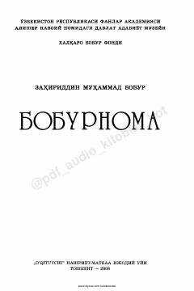

BBuyuk sarkarda va shoir Zahiriddin Muhammad Boburning tarixiy-memuar asari.
Zahiriddin Muhammad Boburning ushbu asari Markaziy Osiyo va Hindiston tarixini o'z ichiga olgan bebaho tarixiy-adabiy manbadir. Kitobda muallifning hayoti, harbiy yurishlari, davlat boshqaruvi va o'sha davr ijtimoiy-siyosiy muhiti batafsil bayon etilgan.